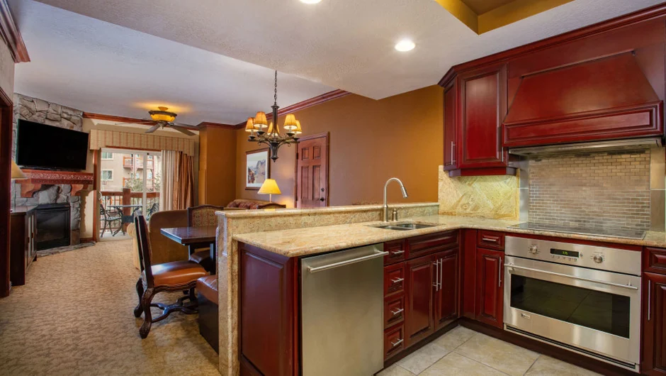
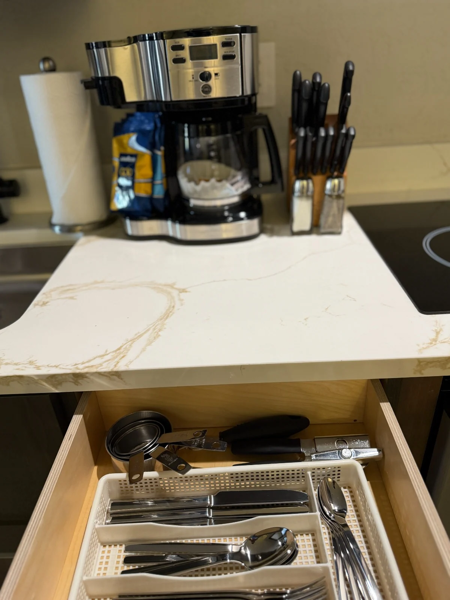

The single most useful logistical decision of a self-catering ski week is where and when you do the big shop. Getting it wrong costs an afternoon of the holiday.

If you have a kitchen, you need it stocked before the first morning. There are three ways to manage that and one of them is clearly best.
Shop on the way in
The road from Salt Lake City passes full-size supermarkets before you reach the resort. Stopping once, on the way in, with the whole group and a vehicle already loaded, is the efficient version. The useful cluster is at Kimball Junction, a few miles short of Canyons Village, and it is genuinely on the way rather than a detour.
| Where | Roughly | Best for |
|---|---|---|
| Large supermarket, Kimball Junction | A few miles before the village | The whole week in one stop, with a pharmacy and a deli |
| Natural-foods supermarket, Kimball Junction | Same exit, separate site | Specialist diets and anything organic |
| Grocery delivery | To the unit | Groups without a car, or a late arrival |
| State liquor store | In the Park City area | Wine and spirits only, and closed Sundays |
| Resort marketplace | In the village | What you forgot, at convenience prices |
For a group of up to 24 that single stop becomes a named job rather than a nice idea, and our group logistics guide covers dividing the shop across three units. The alternative is arriving, unpacking, realising there is no milk, and going back out. That is an hour of the first evening and it happens to a lot of people.
If you are taking a private transfer, ask whether the driver will stop. Many will, and it costs little to arrange in advance.
Delivery
Grocery delivery works in the Park City area and solves the problem without a car. Order ahead for the afternoon you arrive, and check with your accommodation about where a delivery can be left and whether anybody needs to receive it. Resort check-in is commonly mid-afternoon, so a delivery timed for the morning of your arrival can land before anyone is there to take it.
For a group without a car this is usually the best answer. See also whether you need a car.

Utah's alcohol rules, and the Presidents' Week trap
This is the part visitors get wrong, and it is worth two minutes before you travel. Utah sells alcohol differently from most of the country, and the supermarket does not cover it.
- Supermarkets and convenience stores sell beer up to 5% ABV, seven days a week, Sundays included. Anything stronger is not on those shelves.
- Wine, spirits and stronger beer come only from state liquor stores, run by the state's Department of Alcoholic Beverage Services, or from licensed package agencies in more rural areas.
- State liquor stores close on Sundays and on state and federal holidays. They open Monday to Saturday, and a Park City listing shows roughly midday to early evening, though hours differ by store.
- Grocery beer has a late-evening cutoff that sources disagree about, so do not leave it until the end of the night.
Now the trap, and it lands squarely inside the villa's own availability. Presidents' Day 2027 falls on Monday 15 February. A group arriving on Saturday 13 February meets Sunday the 14th and the holiday on the 15th back to back, which means two consecutive days with no state liquor store open. If wine with dinner matters to your group, buy it on the Saturday you arrive or you are drinking supermarket beer until Tuesday.
The same arithmetic does not bite the late-March week. Easter Sunday on 28 March 2027 is not a federal holiday, so only the ordinary Sundays close. Hours and holiday closures do change, so confirm them with the state before building a plan on them. For what the village itself serves, see where to eat in Canyons Village.
The resort marketplace
Resort shops are for what you forgot. Milk, coffee, snacks, the thing a child will only eat. They are convenient and priced for convenience, and that is a fair trade for one forgotten item rather than for a weekly shop.
Treating one as your supermarket for eight people is a way to spend a surprising amount of money on basics. The rule of thumb: if it is on a list you wrote before you travelled, it should have come from the big shop.
What to actually buy
Plan a few meals rather than all of them. Nobody cooks seven dinners on a ski holiday, and the attempt wastes food. For a ski week the useful list is short.
- Breakfast, seven days of it. The highest-value thing in the trolley. Eggs, bread, cereal, fruit, coffee, whatever the group actually eats in the morning. Breakfast is the meal a ski day cannot skip and the one restaurants handle worst at eight in the morning.
- Three or four dinners, built around things that cook in one pan while people take turns in the shower. Leave the other nights open for the village or for town.
- Lunch materials, if you plan to come back at midday. Soup and bread beats a mountain restaurant queue during a peak week, and the villa kitchen is a few minutes from the lifts.
- Snacks for pockets. Children ski better with something in a pocket, and on-mountain food is expensive.
- Drinks, bought deliberately, with the state rules above in mind rather than assumed.
Buy more water than seems reasonable. At 7,000 feet, in dry mountain air, dehydration is the most common cause of a bad first day. More in the altitude guide.
Common questions
Where do you buy groceries near Canyons Village?
The useful cluster is at Kimball Junction, a few miles short of Canyons Village on the road in from Salt Lake City, where there is a large supermarket with a pharmacy and a deli as well as a natural-foods store. The most efficient approach is one large shop on the way in from the airport.
Can you buy wine in a Utah supermarket?
No. Supermarkets and convenience stores sell beer up to 5% ABV seven days a week. Wine, spirits and stronger beer come only from state liquor stores or licensed package agencies, which close on Sundays and on state and federal holidays.
Are Utah liquor stores open during Presidents' Week 2027?
Not on all of it. Presidents' Day 2027 falls on Monday 15 February, so a group arriving on Saturday 13 February meets two consecutive closed days, the Sunday and the holiday. Buy wine and spirits on the Saturday, and confirm current hours with the state.
Is there grocery delivery in Park City?
Yes, delivery services operate in the area. Order for the afternoon you arrive and check with your accommodation about where deliveries can be left, since resort check-in is commonly mid-afternoon and a morning delivery may arrive before anyone is there.
Can I buy everything at the resort shop?
You can, but resort marketplaces are priced for convenience and suit forgotten items rather than a week of food for a group.
The villa this guide comes from
We own a Premier Two-Bedroom Villa inside Westgate Park City Resort, in Canyons Village. It is 1,100 square feet, two king bedrooms and two queen sleeper sofas, so it sleeps eight in one unit. Full kitchen, two bathrooms, in-unit laundry, and a short walk to the Red Pine Gondola.
It is available for Presidents' Week 2027, 13 to 20 February, and we rent it ourselves rather than through an agency.